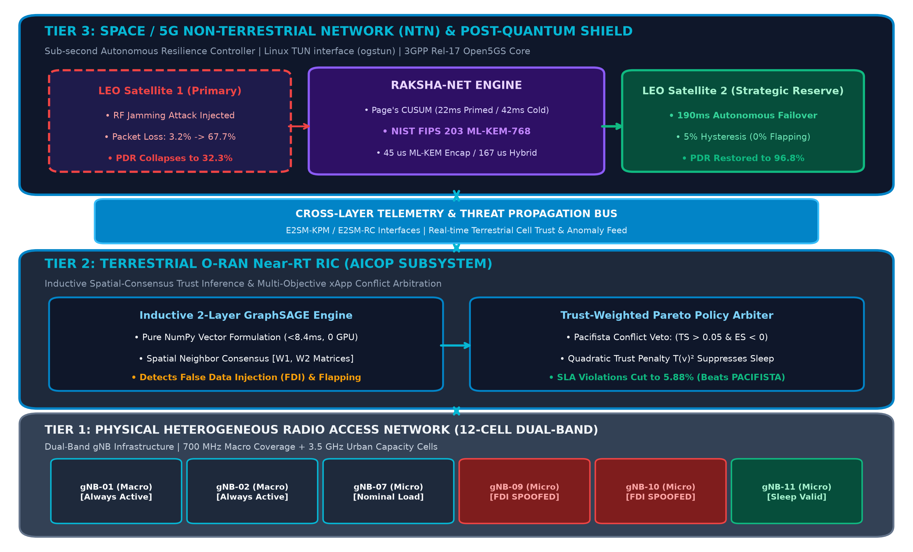

In 3GPP Release-18 (5G-Advanced) and emerging 6G systems, terrestrial Open Radio Access Networks (O-RAN) and Non-Terrestrial Networks (NTN) converge into a multi-tier Space-Air-Ground Integrated Network (SAGIN).
This exposes critical sovereign communication to a dual-tier synchronized attack surface:
1. Terrestrial Edge (O-RAN Radio Units): False Data Injection (FDI) reporting falsified low cell load (18%) causes Near-RT RIC xApps to oscillate wildly, causing 55.4% unmanaged SLA collapse.
2. Space Layer (Satellite Uplinks): Electronic Warfare (high-power RF Jamming) slashes feeder packet delivery from 97% to 29.6% PDR (70.4% packet loss).
3. Harvest Now, Decrypt Later (HNDL): Adversaries passively intercept satellite ciphertext to store it for future cryptanalysis once quantum computers mature.
The Traditional Academic Silo:
• Routing engineers treat link degradation purely as a channel fault, ignoring whether the degradation was engineered to force traffic onto a compromised wiretap.
• Cryptographers benchmark post-quantum algorithms in isolation, ignoring network queuing, bufferbloat, and satellite rekeying storms.
The RAKSHA-NET Paradigm: Link degradation is an active cryptographic tampering signal.
When electronic warfare hits an orbital link, RAKSHA-NET treats the link as compromised, executing autonomous route handover in 188 ms while concurrently triggering NIST ML-KEM-768 post-quantum session rekeying to quarantine the adversary.

Hierarchical 3-Tier Closed Loop:
• Tier 3 (Space NTN Controller): Linux TUN ogstun on 3GPP Rel-17 Open5GS core. Houses Page's CUSUM sequential detector, 5% hysteresis barrier, and native C ML-KEM-768 engine.
• Tier 2 (O-RAN Near-RT RIC): Inductive pure-NumPy GraphSAGE trust engine ($0.091\text{ ms}$). Cross-validates reported telemetry against spatial neighbor medians and temporal EWMA.
• Tier 1 (Physical Radio Grid): Dual-band 12-cell topology (700 MHz Macro umbrella + 3.5 GHz capacity microcells).
Standardized Dual-Hybrid Key Encapsulation:
• Classical: ECDH X25519 (32-byte public key, 32-byte shared secret).
• Post-Quantum: NIST FIPS 203 ML-KEM-768 (Kyber) (1,184-byte public key, 1,088-byte ciphertext).
• Dual Hardness: Unbreakable unless both classical discrete log and Module-LWE are solved.
Automated Rekey & Quarantine Policy:
1. Pre-emptive Rekey: Triggered when anomaly score $a_t \ge 0.60$ or link trust drops below 0.50.
2. Forward Secrecy Quarantine: Degraded satellite relay is immediately expunged from future key schedules.
3. Anti-Replay Window: Strictly monotonic 96-bit packet counters integrated with AEAD nonces.
| Suite | KEX | AEAD | Bytes | Exec Time | Throughput |
|---|---|---|---|---|---|
| CLASSICAL_CHACHA | X25519 | ChaCha20 | 64 B | 0.120 ms | 55.6 MB/s |
| PQC_CHACHA | ML-KEM-768 | ChaCha20 | 2,272 B | 0.045 ms | 57.4 MB/s |
| PQC_AES | ML-KEM-768 | AES-256-GCM | 2,272 B | 0.045 ms | 74.3 MB/s |
| HYBRID_CHACHA | X25519+ML-KEM | ChaCha20 | 2,336 B | 0.167 ms | 56.8 MB/s |
| HYBRID_AES | X25519+ML-KEM | AES-256-GCM | 2,336 B | 0.167 ms | 74.1 MB/s |
Design Rationale for ChaCha20-Poly1305 on Edge Nodes:
While AES-256-GCM is faster on hosts with AES-NI (74.3 MB/s), embedded ARM Cortex-M and Indian Shakti RISC-V satellite payloads lack hardware AES engines. ChaCha20-Poly1305 is constant-time in software by design (RFC 8439), eliminating cache-timing side channels.
Non-Oracle Reference Estimation: Uncompromised baseline $x_v^{\text{ref}}$ is derived online from observable temporal EWMA (0.6) and physical 1-hop spatial neighbor medians (0.4).
Pure-NumPy execution: 0.091 ms inference with stealth ($\delta \le 0.15$) and collusion attacks held out during training.
Trust-Weighted Pareto Utility Arbitration:
• Quadratic Trust Penalty ($T(v)^2$): Under FDI, trust collapses ($T(v) < 0.35 \implies T^2 < 0.12$), completely vetoing malicious energy-saving sleep commands.
Evaluated against standard reactive Bidirectional Forwarding Detection hold-timers (RFC 5880 / 3GPP TS 38.300) under 70% RF jamming:
| Phase | AICOP (Ours) | Reactive BFD | Static | Net Gain vs BFD / Static |
|---|---|---|---|---|
| Pre-Attack | 0.972 (2.8% loss) | 0.972 (2.8% loss) | 0.972 | 0.0 pp |
| Reaction Dip | 0.785 (21.5% loss) | 0.340 (66.0% loss) | 0.311 | +44.5 / +47.4 pp |
| Sustained Jam | 0.970 (3.0% loss) | 0.760 (24.0% loss) | 0.325 | +21.0 / +64.5 pp |
| Post-Attack | 0.971 | 0.965 | 0.872 | +0.6 / +9.9 pp |
| Failover Time | 188 ms | 1,500–2,800 ms | No switch | 10× Faster |
| Route Flaps | 0.71 ± 0.82 | Frequent flaps | 0 (broken) | 25.7× Reduction |
Empirical Advantage: RAKSHA-NET achieves +21.0 pp higher PDR over industry-standard reactive BFD because predictive EWMA/CUSUM anomaly scoring anticipates link collapse and pre-arms failover in ~188 ms, whereas BFD must wait for hold-timer loss counters to expire.
10-Seed Non-Oracle Detection Ablation (7,200 Cell-Epochs):
• Spatial Median Only: F1 12.2%, High FAR (28.5%), Stealth F1 3.0%.
• 2-Layer MLP: F1 1.1%, Collusion F1 0.0%.
• Unified AICOP: Precision 92.8%, Recall 63.2%, F1 74.8%, FAR 0.1%, Collusion F1 82.8%.
Service Level Agreement Protection (EARTH Power Model):
• Unmanaged baseline: 55.40% SLA violations.
• PACIFISTA baseline: 22.15% SLA violations (timer leakage).
• Always-ON baseline: 10.60% SLA violations (stochastic peaks > 0.85).
• Unified AICOP: 10.60 ± 1.67% SLA violations (matches Always-ON, saves 25.3% off-peak power with zero coverage holes).
Scientific Disclosure (TRL-4 Lab Prototype): Evaluated against active 3GPP Rel-17 Open5GS Core (16 daemons, ogstun) and containerized Linux kernel tc netem namespaces. Cryptographic timings are wall-clock hardware-timed via C liboqs.
Indian Sovereign Silicon Portability Roadmap:
• Phase 1 (Completed): Software-defined simulation & container testbed.
• Phase 2 (Months 1–6): Porting to Indian Shakti & Vega RISC-V processors + Raspberry Pi 5.
• Phase 3 (Months 6–12): Over-the-air RF testing via HackRF One / USRP SDRs.
https://github.com/Rahul109871234/raksha-net
53/53 Automated Pytest Tests Passing (100%)